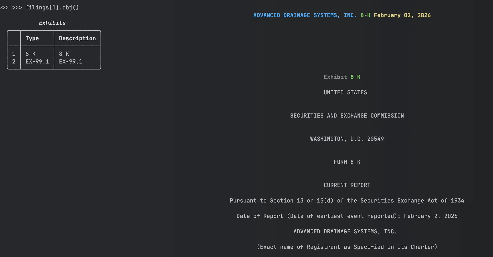

8-K Current Reports: Parse SEC Corporate Events and Earnings with Python
Companies file 8-K current reports within four business days of material events -- acquisitions, executive changes, earnings releases, bankruptcy. EdgarTools parses these filings into structured Python objects so you can access the event items, press releases, and financial tables.
from edgar import *
filing = get_filings(form="8-K").latest()
eight_k = filing.obj()
eight_k

Three lines to get a parsed 8-K with company info, filing date, items disclosed, and exhibits.
See today's 8-K filings on edgar.tools — with AI-classified material event types →
Read Item Content
Every 8-K discloses one or more numbered items (1.01 through 9.01). The items property lists what was disclosed:
eight_k.items # ['Item 2.02', 'Item 9.01']
Access the text of any item by number:
# Works with or without "Item" prefix
content = eight_k['2.02']
content = eight_k['Item 2.02']
print(content)
Common items:
| Item | What it reports |
|---|---|
| 1.01 | Material agreements |
| 2.02 | Earnings and financial condition |
| 5.02 | Director or officer changes |
| 8.01 | Other events |
| 9.01 | Financial statements and exhibits |
The complete mapping is in eight_k.structure.
Access Press Releases
Most 8-Ks attach press releases as EX-99 exhibits:
if eight_k.has_press_release:
releases = eight_k.press_releases
pr = releases[0]
# Get content in different formats
pr.text() # Plain text
pr.html() # HTML
pr.to_markdown() # Markdown
pr.open() # Open in browser
Press releases are indexed by position. press_releases[0] is the first release, press_releases[1] is the second.
Extract Earnings and Financial Statements from 8-K Filings
When a company reports quarterly earnings, the numbers first appear in an 8-K -- weeks before the formal 10-Q. The company files Item 2.02 ("Results of Operations and Financial Condition") and attaches the earnings press release as an EX-99.1 exhibit. That exhibit contains HTML tables with income statements, balance sheets, and cash flows. EdgarTools detects this pattern and parses the tables automatically.
from edgar import Company
aapl = Company("AAPL")
filing = aapl.get_filings(form="8-K").latest()
eight_k = filing.obj()
eight_k.has_earnings # True if Item 2.02 + parseable EX-99.1 exhibit
Get Financial Statements
if eight_k.has_earnings:
# Direct access to parsed statements
eight_k.income_statement # FinancialTable or None
eight_k.balance_sheet # FinancialTable or None
eight_k.cash_flow_statement # FinancialTable or None
# Safe accessors -- always return a DataFrame (empty if missing)
df = eight_k.get_income_statement()
df = eight_k.get_balance_sheet()
df = eight_k.get_cash_flow_statement()
Work with the Data
Each statement is a FinancialTable with the parsed data and detected scale:
income = eight_k.income_statement
income.dataframe # Parsed data as DataFrame
income.scaled_dataframe # Values multiplied by detected scale
income.scale # Scale enum (UNITS, THOUSANDS, MILLIONS, BILLIONS)
income.title # Table title if detected
income.to_html() # HTML export for web apps
income.to_json() # JSON export for APIs
Press releases often report values "in millions" or "in thousands." EdgarTools detects the scale from the document text. Use scaled_dataframe to get actual dollar amounts, or check scale to apply your own multiplier.
Access All Parsed Tables
The earnings property returns the full EarningsRelease object, which may contain more than just the three core statements:
earnings = eight_k.earnings
earnings.financial_tables # All parsed financial tables
earnings.segment_data # Business segment breakdown
earnings.eps_reconciliation # GAAP to Non-GAAP EPS reconciliation
earnings.guidance # Forward guidance table
earnings.detected_scale # Document-level scale factor
Not every press release includes all of these -- segment_data, eps_reconciliation, and guidance return None when the company doesn't report them.
Work with Exhibits
All 8-K attachments (press releases, financial statements, material agreements):
exhibits = filing.exhibits
for ex in exhibits:
print(f"{ex.document_type}: {ex.description}")
# Access specific exhibit
ex_99 = exhibits[0]
content = ex_99.download()
Exhibits are indexed by position. The document_type shows what kind of exhibit it is (EX-99.1, EX-10.1, etc.).
Common Analysis Patterns
Find all earnings releases in a quarter
from edgar import get_filings
filings = get_filings(
form="8-K",
date="2024-01-01:2024-03-31"
)
for filing in filings[:20]:
eight_k = filing.obj()
if eight_k.has_earnings:
print(f"{filing.company}: {filing.filing_date}")
Extract all financial tables
if eight_k.has_earnings:
for table in eight_k.earnings.financial_tables:
print(f"{table.statement_type.value}: {table.dataframe.shape}")
Check for specific events
# Director changes
if 'Item 5.02' in eight_k.items:
print(eight_k['5.02'])
# Material agreements
if 'Item 1.01' in eight_k.items:
print(eight_k['1.01'])
# Stock split announcements (Item 8.01 or 5.03)
if 'Item 8.01' in eight_k.items or 'Item 5.03' in eight_k.items:
content = eight_k.get('8.01') or eight_k.get('5.03') or ''
if 'split' in content.lower():
print(f"Stock split announced: {filing.filing_date}")
See this on edgar.tools
The code above detects 8-K event types by checking item numbers manually. edgar.tools classifies material events automatically using LLMs — earnings, acquisitions, executive changes, and more — across every 8-K as it's filed.
- Watch 8-K filings arrive in real time with event classification →
- See Apple's recent material events →
Includes AI-generated summaries, business descriptions, and cross-filing linkages. Free tier available. Pricing →
Metadata Quick Reference
| Property | Returns | Example |
|---|---|---|
company |
Company name | "Apple Inc." |
form |
Form type | "8-K" |
filing_date |
Date filed with SEC | "2024-02-01" |
period_of_report |
Report date | "2024-01-31" |
date_of_report |
Formatted report date | "January 31, 2024" |
items |
List of disclosed items | ['Item 2.02', 'Item 9.01'] |
has_press_release |
Has EX-99 press release? | True |
has_earnings |
Has parseable earnings data? | True |
Methods Quick Reference
| Call | Returns | What it does |
|---|---|---|
eight_k['2.02'] |
str |
Get item content by number |
eight_k.press_releases |
PressReleases |
Collection of press release exhibits |
eight_k.earnings |
EarningsRelease |
Parsed earnings tables from EX-99.1 |
eight_k.income_statement |
FinancialTable |
Income statement or None |
eight_k.balance_sheet |
FinancialTable |
Balance sheet or None |
eight_k.cash_flow_statement |
FinancialTable |
Cash flow statement or None |
eight_k.get_income_statement() |
DataFrame |
Income statement (empty DataFrame if missing) |
eight_k.get_balance_sheet() |
DataFrame |
Balance sheet (empty DataFrame if missing) |
eight_k.get_cash_flow_statement() |
DataFrame |
Cash flow (empty DataFrame if missing) |
Things to Know
Item detection is multi-tier. EdgarTools uses document parser first (95% accuracy), falls back to text extraction for legacy SGML filings (1999-2001).
Earnings parsing requires EX-99.1. The has_earnings property returns True only if Item 2.02 is present AND an EX-99.1 exhibit contains parseable tables. Some earnings 8-Ks only have narrative text.
Scale matters. Financial tables include scale detection (thousands, millions, billions). Use scaled_dataframe to get values with scale applied, or check table.scale to apply manually.
Not all 8-Ks have XBRL. 8-K filings typically contain only DEI (Document and Entity Information) XBRL metadata. Actual financial data is in HTML tables within EX-99 exhibits.
Press releases use pattern matching. EdgarTools looks for EX-99, EX-99.1, EX-99.01 exhibits or exhibits with "RELEASE" in the description. Some companies use non-standard exhibit numbering.
Related
- Stock Splits & EPS Normalization -- detect split announcements and normalize metrics
- Working with Filings -- general filing access patterns
- 10-K Annual Reports -- annual report parsing
- 10-Q Quarterly Reports -- quarterly report parsing